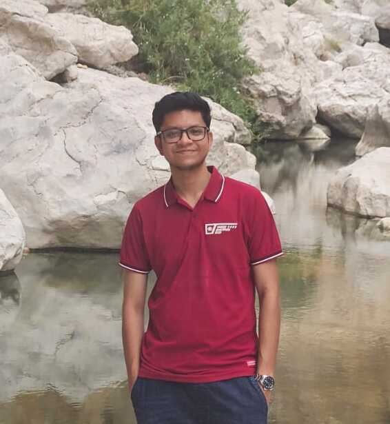

I am a Computer Science and Engineering graduate from the National Institute of Technology Rourkela , where I completed my B.Tech in June 2026. I am broadly interested in networking systems — congestion control, network performance optimization, edge/fog computing, energy-efficient networking, and QoS/resource management — and in applying machine learning and reinforcement learning to network optimization and edge AI problems.
I previously worked as a Research Assistant in the Machine Learning and Robotics Lab at NIT Rourkela, under Prof. Anup Nandy, where I developed a real-time, on-device LLM-powered voice interaction system for edge devices using Whisper, Llama.cpp, and TTS. Before that, in the summer of 2025, I interned as a Technology Intern Analyst at Wells Fargo International Solutions Ltd., where I contributed to a content management system, working on backend services in Java and Spring Boot, and built automated test suites using Cucumber and Gherkin within an agile sprint cycle.
For more details, refer to my CV or drop me an email.
- Ranked 3rd out of 149 in the Dept. of Computer Science and Engineering (B.Tech) at NIT Rourkela.
- Completed the Machine Learning and Deep Learning Specializations taught by Prof. Andrew Ng (November 2025).
- Secured 3rd Rank in the Third Year of the B.Tech CSE program, Dept. of CSE, NIT Rourkela (August 2025).
- Secured 3rd Rank among B.Tech CSE students across the first four semesters with a CGPA of 9.45/10, Dept. of CSE, NIT Rourkela (September 2024).
Developed a real-time, on-device LLM-powered voice interaction system on Raspberry Pi using Whisper, Llama.cpp, and TTS, targeting low-latency conversational inference. Investigated lightweight, resource-efficient inference strategies for deploying AI workloads on resource-constrained edge devices.
Collaborated on a content management system project, troubleshooting and testing backend services using Java and Spring Boot. Implemented automated testing for internal workflows using Cucumber and Gherkin, improving regression test efficiency within the agile sprint cycle.
Implemented Elastic-TCP, a congestion-control algorithm designed to provide flexible control for high-bandwidth-delay-product (BDP) networks, as a Linux-ready implementation in NS-2. Reproduced and validated the flexible congestion-control mechanism under simulated network conditions.
codeBuilt a full-stack 3D face-mesh identification system with a React frontend, FastAPI backend, and a custom inference pipeline. Integrated Deep Learning face reconstruction models (MICA(Deep-CNN), OFER(Diffusion U-Net)) to register and compare facial meshes in 3DMM (FLAME) parameter space, with automated mesh storage and 3D visualization using Three.js.
code- Programming: C, C++, Python, SQL, Tcl
- Networking & Systems: Computer Networks, TCP/IP, Congestion Control, NS-2, Distributed Systems
- Machine Learning: PyTorch, TensorFlow
- Developer Tools: Git/GitHub, Docker